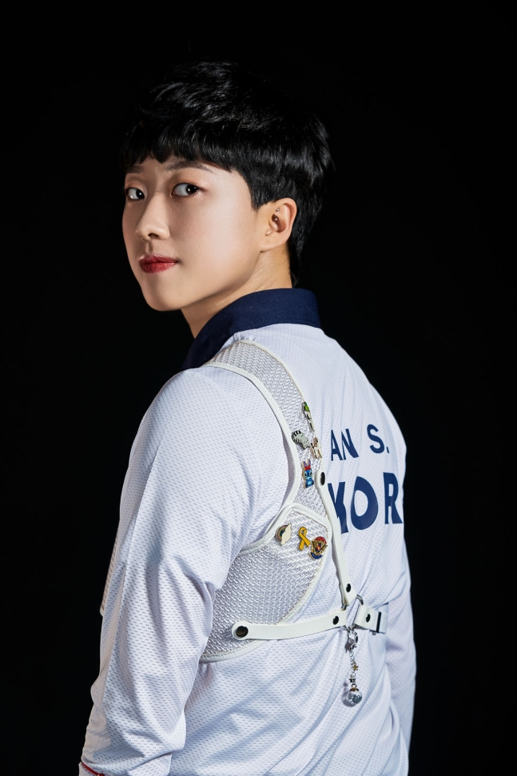

- 안산
- 김연경
- 김희진
안산
안산(安山, 2001년 2월 27일~)은 대한민국의 양궁 선수이다. 2017년 세계 유스 양궁 선수권 대회에서 혼성 단체전 은메달을 획득했고, 2018년부터 국가대표 선수로 활동하고 있다. 2020년 하계 올림픽 국가대표로 발탁되었으며, 양궁 혼성 단체 결승전에서 김제덕과 함께 금메달을 획득했다. 또한 양궁 여자 단체전에서 강채영, 장민희와 함께 금메달을 획득하였다. 그리고 양궁 여자 개인전에서도 옐레나 오시포바를 누르고 금메달을 따면서 올림픽 양궁 사상 최초로 단일 대회 3관왕에 올랐다.

안산은 2021년 일본 도쿄도 유메노시마공원 양궁장에서 열린 2020 도쿄 올림픽에 출전해 본격적인 활약을 펼쳤다. 도쿄 올림픽 개막일인 7월 23일 열린 올림픽 양궁 여자 개인 랭킹 라운드에서 안산은 680점의 성적을 올리며 전체 1위에 올랐다. 특히 안산이 기록한 점수는 올림픽 신기록이었다.
출처 - 위키백과